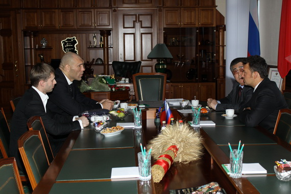
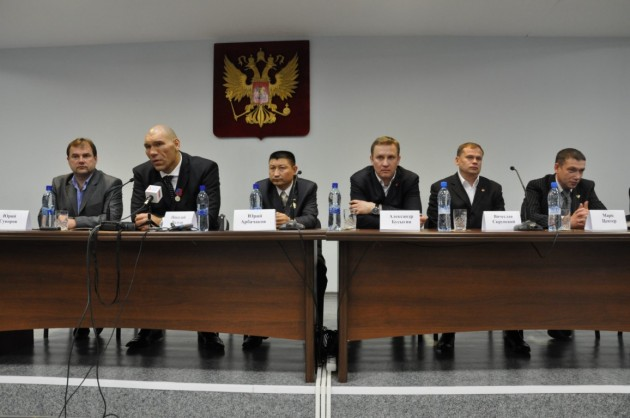

Город Кемерово в этом отношении наверняка не отличается от других городов России, но сегодня как-то по особому знаково совпало.
Для людей верующих по Кузбассу возят частицу мощей вмч. (с церковного это «великомученник») Георгия Победоносца. Мощи прибыли в Кузбасс из Калуги 1 ноября и поклонение части ставшего святым человека для людей верующих очень важный ритуал. Сегодня мощи возили в кадетский корпус МЧС пос. Плотниково.
В центре Кемерово тем временем мощь России вовсю олицетворял известный боксер Николай Валуев. Николай провел «зарядку с чемпионом» на главной площади столицы и встретился с губернатором.

Человек на-гора пообещал посетить юг Кузбасса с целью знакомства с выведенным кузбасскими учеными снежным человеком.
Бонус:
